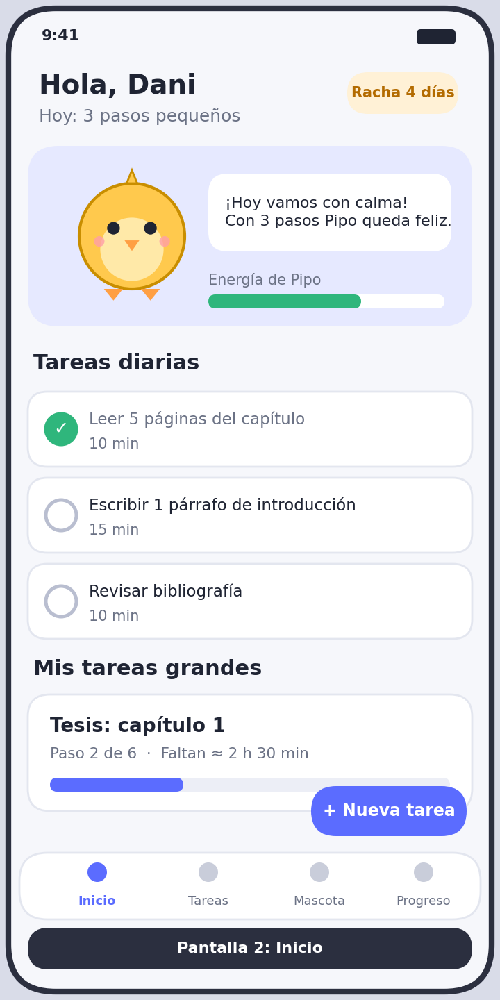
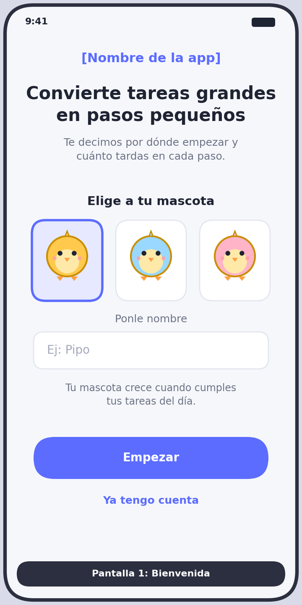
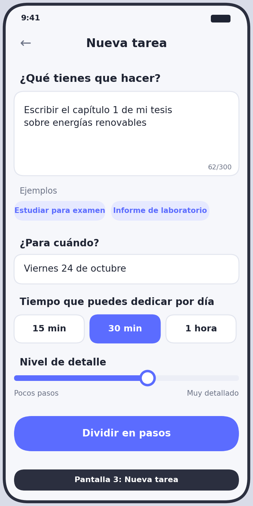
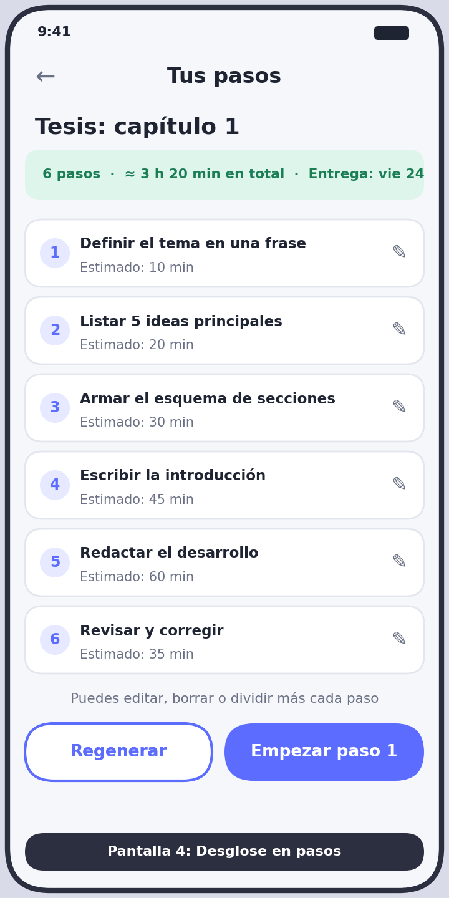
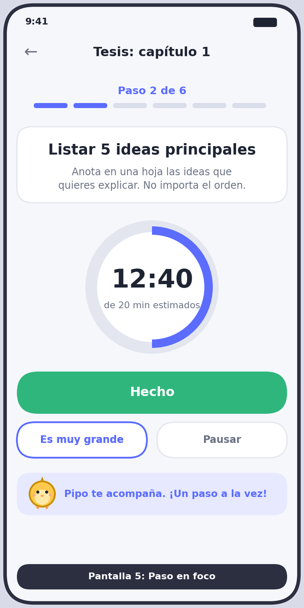
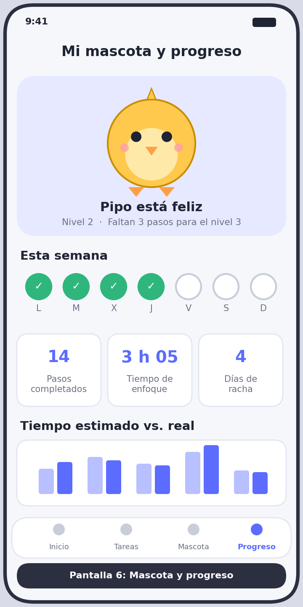

Cuéntanos la tarea
Escribe qué tienes que hacer y para cuándo. Una frase basta.
Beta cerrada · Para universitarios
Escribes tu tarea grande (tesis, proyecto, examen) y la dividimos en pasos pequeños con el tiempo que toma cada uno. Cada día que cumples, tu mascota crece.
Gratis durante la beta. Sin tarjeta.

Cuando un trabajo se ve enorme, no sabemos cuál es el primer paso. Abrimos el documento, lo cerramos y dejamos todo para la noche anterior. No es falta de ganas: es no tener un siguiente paso claro.
Las listas y agendas te piden planificar tú solo, justo lo que más cuesta cuando ya estás abrumado.
Escribe qué tienes que hacer y para cuándo. Una frase basta.
La dividimos en pasos concretos, cada uno con su tiempo estimado. Puedes editarlos.
Completa tus tareas diarias y tu mascota se mantiene feliz y sube de nivel.
Para estudiantes universitarios de 18 a 25 años que tienen trabajos grandes (tesis, proyectos de grado, informes, exámenes) y varias materias a la vez.
Si siempre dices "mañana empiezo", esta beta es para ti.
Estas son las pantallas que estamos diseñando. Desliza para ver el recorrido completo.





Es un prototipo de diseño: la app todavía no está construida.
Déjanos tus datos y te avisamos cuando abramos los primeros lugares. Tus respuestas nos ayudan a decidir qué construir primero.